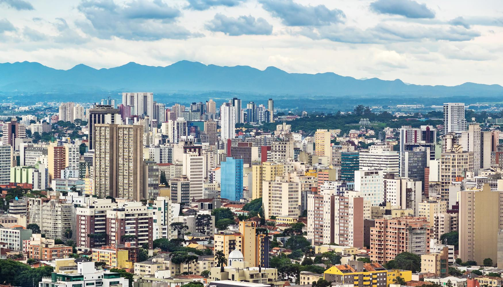
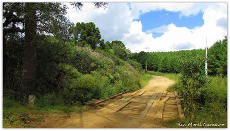
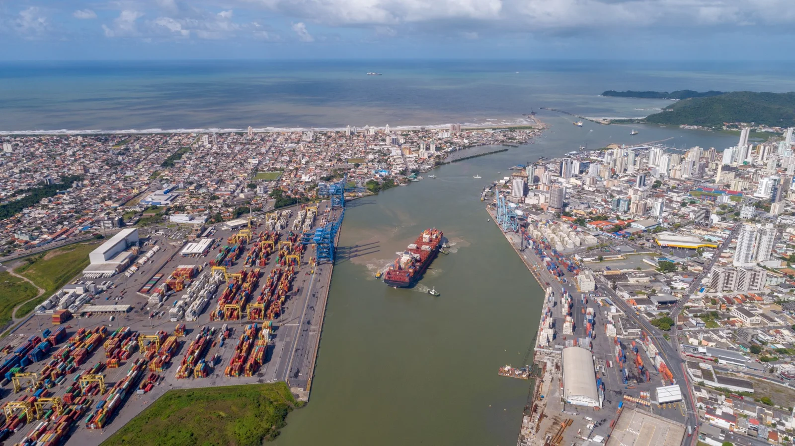
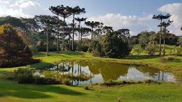
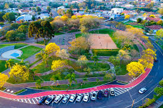

Curitiba
Curitiba é um município brasileiro, capital do estado do Paraná, localizado a 934 metros de altitude
no Primeiro Planalto Paranaense, a mais de 110 quilômetros do Oceano Atlântico, distante 1 386 km a
sul de Brasília, capital federal. Com 1 773 718 habitantes, é o município mais populoso do Paraná e
da região Sul, além de ser o 8.º do país, segundo Censo Demográfico realizado pelo IBGE para 2022.
Guairacá
O distrito de Guairacá está vinculado ao município Guarapuava que está localizado no estado Paraná -
PR;
Na divisão regional do IBGE este estado está localizado na Região Sul do Brasil e tem como capital a
cidade Curitiba.,
Este distrito pertence à Microrregião Guarapuava e à Mesorregião Centro-Sul Paranaense.
Itajaí
Itajaí é um município brasileiro localizado no estado de Santa Catarina, na Região Sul do Brasil,
distante 94 km da capital catarinense, Florianópolis. Tem uma população de 264.054 habitantes, sendo
uma cidade média, é o quinto município mais populoso do estado segundo os dados do censo de 2022.
Localiza-se no litoral centro norte catarinense, na margem direita da foz do rio Itajaí-Açu. Possui
o maior produto interno bruto de Santa Catarina e a 2ª maior renda per capita do estado.
Pinhão
Pinhão é um município brasileiro do estado do Paraná. Localiza-se a uma latitude 25º41'44" sul e a uma longitude 51º39'35" oeste, estando a uma altitude de 1041 metros. Sua população estimada em 2022 é de 29.886 habitantes. Possui uma área de 2.001,588 km².
Leia maisPitanga
Pitanga, nome de origem tupi, significa o fruto da pitangueira. O povoamento da Serra de Pitanga, como era chamada, decorreu de fatos isolados, levados a efeito por diversos grupos. O município tem 32.645 habitantes, conformeo IBGE. Vizinho dos municípios de Santa Maria do Oeste, Manoel Ribas e Boa Ventura de São Roque, Pitanga está a 337 km de Curitiba e a 78 km de Guarapuava, a maior cidade nas proximidades.